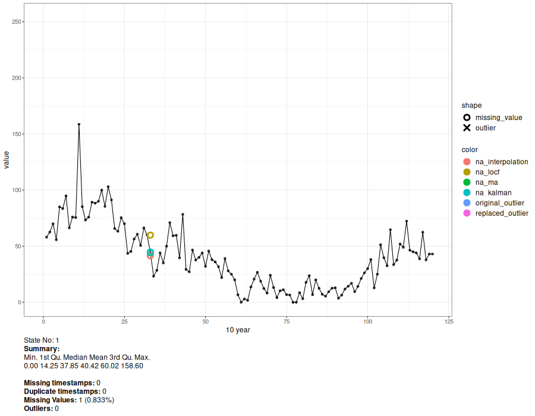

cleanTS package focuses on developing a tool for making the process of cleaning large datasets simple and efficient. Currently it solely focuses on data cleaning for univariate time series data. The package is integrated with already developed and deployed tools for missing value imputation. It also provides a way for visualizing data at different resolutions, allowing micro-scale visualization. The ultimate goal is the creation of a handy software tool that deals with the problems, processes, analysis and visualization of big data time series, with minimum human intervention.
cleanTS()checks the data for missing and duplicate timestamps, performs missing value imputation and removes anomalies/outliers from the data.animate_interval()splits the data and generates an animated plot.interact_plot()is similar toanimate_interval()but creates an interactive plot which provides relatively more control over the animation.
The package can also be used using a shiny application, available at https://mayur1009.shinyapps.io/cleanTS/.
Package Documentation can be found at https://mayur1009.github.io/cleanTS/
This project is a part to Google Summer of Code 2021.
Installation
# Install release version from CRAN (yet to be released)
install.packages("cleanTS")
# Install development version from GitHub
devtools::install_github("Mayur1009/cleanTS")Example
library(cleanTS)
#> Registered S3 method overwritten by 'quantmod':
#> method from
#> as.zoo.data.frame zoo
# Read sunspot.month dataset
data <- timetk::tk_tbl(sunspot.month)
#> Warning: `type_convert()` only converts columns of type 'character'.
#> - `df` has no columns of type 'character'
print(data)
#> # A tibble: 3,177 × 2
#> index value
#> <yearmon> <dbl>
#> 1 Jan 1749 58
#> 2 Feb 1749 62.6
#> 3 Mar 1749 70
#> 4 Apr 1749 55.7
#> 5 May 1749 85
#> 6 Jun 1749 83.5
#> 7 Jul 1749 94.8
#> 8 Aug 1749 66.3
#> 9 Sep 1749 75.9
#> 10 Oct 1749 75.5
#> # … with 3,167 more rows
# Randomly insert missing values to simulate missing value imputation
set.seed(10)
ind <- sample(nrow(data), 100)
data$value[ind] <- NA
# Create `cleanTS` object
cts <- cleanTS(data, date_format = c("my"))
#> Warning: `type_convert()` only converts columns of type 'character'.
#> - `df` has no columns of type 'character'
summary(cts)
#> Length Class Mode
#> clean_data 5 data.table list
#> missing_ts 0 POSIXct numeric
#> duplicate_ts 0 POSIXct numeric
#> imp_methods 4 -none- character
#> mcar_err 4 data.frame list
#> mar_err 4 data.frame list
#> outliers 4 data.table list
#> outlier_mcar_err 4 data.frame list
#> outlier_mar_err 4 data.frame list
# Cleaned Data
head(cts$clean_data)
#> time value missing_type method_used is_outlier
#> 1: 1749-01-01 58.0 <NA> <NA> FALSE
#> 2: 1749-02-01 62.6 <NA> <NA> FALSE
#> 3: 1749-03-01 70.0 <NA> <NA> FALSE
#> 4: 1749-04-01 55.7 <NA> <NA> FALSE
#> 5: 1749-05-01 85.0 <NA> <NA> FALSE
#> 6: 1749-06-01 83.5 <NA> <NA> FALSE
# Genearate animated plot
a <- animate_interval(cts, interval = "10 year")
gen.animation(a, height = 700, width = 900)
# Generate interactive plot
interact_plot(cts, interval = "10 year")